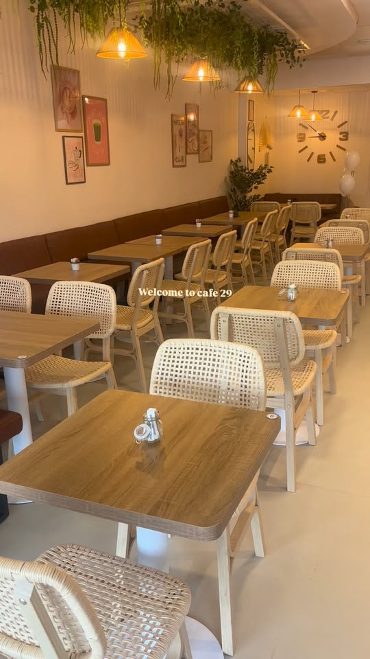
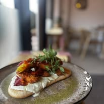
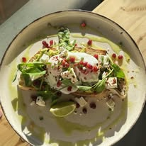
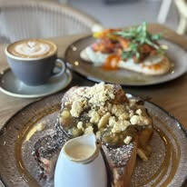

CAFE 29 / PERTONCoffee & brunch
Coffee & brunch
at 29.
From your first flat white to a catch-up over a colourful plate. Find your table in Anders Square.
Explore the coffee counterPop in this weekMon - Sat 9am - 4pm
Sunday 10am - 2pm
Find us in Perton Sunday 10am - 2pm

Good coffee.
Your kind of cafe.

Dine inOutdoor seatingIn-store collectionPerton, Wolverhampton
01 / What's brewingYour coffee,
Your coffee,
your way.
Hot coffee, something iced, or a little sweetness. What are you in the mood for?
Something to eat
Fresh from the kitchen.
A little inspiration for your next visit.
Take a look at life around our tables.

02 / Your corner of PertonA closer look
A closer look
at Cafe 29.
Wooden tables. Woven chairs.
A coffee within reach.
Find us in Anders Square for a bite to eat or a catch-up over coffee. Settle inside, take a seat outdoors, or choose in-store collection when you're on the move.
Plan your visit01 Dine in02 Outdoor seating03 In-store collection
03 / See you at 29Come and
29 Anders Square
Perton, Wolverhampton
WV6 7QH
Come and
find us.
29 Anders SquarePerton, Wolverhampton
WV6 7QH
Come on over
- Monday
- 09:00 - 16:00
- Tuesday
- 09:00 - 16:00
- Wednesday
- 09:00 - 16:00
- Thursday
- 09:00 - 16:00
- Friday
- 09:00 - 16:00
- Saturday
- 09:00 - 16:00
- Sunday
- 10:00 - 14:00
Let's talk coffee.
For questions about the cafe or in-store collection, get in touch.